의류기사 (2005-05-29 기출문제)
1과목: 피복재료학
1. 면직물의 광택과 유연성을 증대시키고 더 좋은 강도를 높이기 위해 행하는 가공방법은?
- 암모니아 가공
- 수지 가공
- 머서화 가공
- 런던쉬렁크 가공
(정답률: 알수없음)

2. 다음 아라미드의 특성을 설명한 것이다. 틀린 것은?
- 융점이 높다.
- 내열성이 좋다.
- 염색이 안된다.
- 분자에 벤젠을 포함한다.
(정답률: 알수없음)
3. 면섬유의 제2차막을 구성하는 피브릴(fibril)층이 섬유의 길이 방향과 이루는 각도는?
- 20°- 45°
- 45°- 50°
- 55°
- 70°
(정답률: 알수없음)
4. 다음 중에서 조직이 간단하고 경사와 위사의 교차가 가장 많은 조직은?
- 능직
- 수자직
- 레노직
- 평직
(정답률: 알수없음)
5. 레질리언스에 대한 설명이다. 가장 옳은 것은?
- 이는 섬유의 신장탄성과 동일한 뜻이다.
- 카펫에 사용되는 섬유, 침구용 솜의 성능과 밀접한 관계를 가진다. 그러나 의복의 내추성에는 영향을 끼치지 않는다.
- 섬유가 외부 힘의 작용으로 굴곡, 압축 등의 변형을 받았다가 외부의 힘이 제거될 때 원상으로 돌아가는 능력이다.
- 레질리언스는 섬유의 굵기, 단면형과도 관계가 있다. 따라서 굵은 섬유보다는 섬세한 섬유일수록 좋다.
(정답률: 알수없음)
6. 아마 섬유의 즐소(櫛梳,hackling) 공정에서 얻어진 분리된 짧은 섬유는?
- 라인(line)
- 토우(tow)
- 노일(noil)
- 린터(linters)
(정답률: 알수없음)
7. 아마섬유의 단면을 현미경으로 보면 다음과 같다. 맞는 것은?
- 둥글다.
- 톱니처럼 요철이 심하다.
- 세모꼴이다.
- 오,육각형의 다각형이다.
(정답률: 알수없음)
8. 모든 천은 제조공정중에 응력을 받아 직기나 편기에서 내려 놓으면 수축현상이 일어난다. 이러한 수축현상을 어떤 수축이라고 하는가?
- 펠트 수축
- 팽윤 수축
- 축융 수축
- 이완 수축
(정답률: 알수없음)
9. 다음 중 섬유소(Cellulose) 함량이 가장 많은 것은?
- 아마
- 면
- 황마
- 대마
(정답률: 알수없음)
10. 20's면사와 30's 면사를 합연하여 만든 실의 합사번수는? (단, 연축율은 무시한다.)
- 12's
- 15's
- 25's
- 60's
(정답률: 알수없음)
11. 퍼머넌트프레스 가공에 따르는 문제점이 아닌 것은?
- 강도가 감소된다.
- 오염이 잘 된다.
- 구김이 잘 간다.
- 변색이 된다.
(정답률: 알수없음)
12. 볼펜잉크가 묻었을 때 처리방법을 옳게 설명한 것은?
- 잉크는 산성임으로 암모니아수로 제거한다.
- 먼저 온수로 씻은후 제거되지 않으면 세제로 씻는다.
- 유기용제로 먼저 씻어낸 후 세제액으로 다시 씻고 색소가 남아 있으면 표백한다.
- 수산과 세제를 혼합해서 씻으면 된다.
(정답률: 알수없음)
13. 합성섬유의 방사방법은 건식, 습식 및 용융방사의 3가지이다. 다음 문항 중 맞는 것은?
- 비스코스레이온은 습식방사법을 취한다.
- 나일론은 건식방사법으로 한다.
- 아세테이트는 용융방사법이다.
- 폴리에스테르, 아크릴섬유는 용융 방사법이다.
(정답률: 알수없음)
14. 180 denier와 굵기가 동일한 Tex와 또 동일한 decitex는?
- 20 Tex와 200 decitex
- 0.2 Tex와 2 decitex
- 2 Tex와 20 decitex
- 200 Tex와 20 decitex
(정답률: 알수없음)
15. 수자직의 대표적인 직물은?
- 공단
- 개버딘
- 서지
- 헤링본
(정답률: 알수없음)
16. 일반적으로 아크릴(Acrylic)섬유의 공중합체인데 순수 아클리로니트릴(Acrylonitrile)의 함량이 얼마 이상인 것을 말하는가?
- 85%
- 65%
- 50%
- 100%
(정답률: 알수없음)
17. 꼬임이 많은 실로 만든 직물은?
- 광택이 좋다.
- 매끈하다.
- 부드럽다.
- 깔깔하다.
(정답률: 알수없음)
18. 다음 중 합성섬유의 방사단계로 옳은 것은?
- 고분자합성→연신→방사액준비→방사→열처리
- 방사액준비→고분자합성→방사→연신→열처리
- 고분자합성→열처리→방사액준비→방사→연신
- 고분자합성→방사액준비→방사→연신→열처리
(정답률: 알수없음)
19. 다음 중에서 위파일 직물은?
- 플러쉬(Plush)
- 코오더로이(corduroy)
- 벨벳(Velvet)
- 애스트러캔(astrakan)
(정답률: 알수없음)
20. 능직은 경·위사가 최소한 몇 올이 되어야 하는가?
- 2올
- 3올
- 5올
- 7올
(정답률: 알수없음)
2과목: 피복환경학
21. 내열복으로서 갖추어야 할 성질이 아닌 것은?
- 방염성이 높은 것
- 가볍고 입어서 기분이 좋은 것
- 발수성이 높은 것
- 발유성이 없는 것
(정답률: 알수없음)
22. 습도 60%(RH), 기류 25cm/sec로 일정한 환경하에 체내에서의 산열이나 냉난방의 도움없이 의복의 착용만으로 조절할 수 있는 기후의 한계는?
- 18 - 29℃
- 26 - 34℃
- 10 - 28℃
- 4 - 12℃
(정답률: 알수없음)
23. 의복기후의 조절 작용과 관계가 없는 것은? (단, 체열방산에 의함)
- 환기에 의한 방열작용
- 흡습에 의한 방열작용
- 전도 대류에 의한 방열작용
- 증발에 의한 방열작용
(정답률: 알수없음)
24. 의복기후의 측정용구가 아닌 것은?
- 휴우머시리즈 습도계
- 서어미스터 온도계
- 골드웨이브 습도계
- 글로브 온도계
(정답률: 알수없음)
25. 섭씨 30도를 화씨로 환산하면 얼마인가?
- 25°F
- 47°F
- 86°F
- 94°F
(정답률: 알수없음)
26. 다음 체온의 변동과 관계되는 사항이다. 옳은 것은?
- 노인의 체온은 성인보다 높다.
- 체온이 가장 낮은 아침 6시경의 체온을 기초체온이라 한다.
- 체온변동의 폭이 0.6℃ 이상일때는 병적인 상태이다.
- 낮에는 체온이 높고 밤에는 낮아진다.
(정답률: 알수없음)
27. 위생적인 면에서 일반적으로 의복이 구비해야 할 조건이 아닌 것은?
- 신체를 보호해야 한다.
- 활동에 적합해야 한다.
- 기후 조절이 잘 되어야 한다.
- 색상이 흰색이어야 한다.
(정답률: 알수없음)
28. 의복재료의 물리적 자극으로 인한 피부 장해와 관계가 없는 것은?
- 의복의 형과 체형의 불일치
- 탄성
- 마찰
- 과도한 의복압
(정답률: 알수없음)
29. 인체의 정신적 발한이 주로 이루어지는 곳은?
- 아포크린선
- 에크린선
- 허파
- 임파선
(정답률: 알수없음)
30. 다음의 유아복 재료 선택에 관한 사항 중 가장 옳지 않은 것은?
- 촉감이 좋은 것
- 세탁에 잘 견디는 것
- 두껍고 따뜻한 것
- 통기성이 좋은 것
(정답률: 알수없음)
31. 감각온도와 관계 없는 사항은?
- 복사열
- 기습
- 기류
- 기온
(정답률: 알수없음)
32. 청소작업시의 대사량이 80cal/m2hr이고 기초대사량이 40cal/m2hr 일 때 에너지 대사율을 구하면?
- 0.6
- 0.8
- 1.0
- 1.2
(정답률: 알수없음)
33. 방향이 일정하지 않은 약한 기류를 측정하는 기구는?
- 아우구스트 건습온도계
- 카타 온도계
- 흑구 온도계
- 최고최저 온도계
(정답률: 알수없음)
34. 불쾌지수(Discomfort index)에 대한 설명 중 틀린 것은?
- D.I 75 이상 : 30%가 불쾌하게 느낀다.
- D.I 70 - 74 : 약간 불쾌하다고 느낀다.
- D.I 는 온습지수라고도 한다.
- D.I 85 이상 : 더위를 참기가 힘들다.
(정답률: 알수없음)
35. 실험복, 간호복, 식품 관계의 작업시에 생리적으로 바람직한 작업복의 명도는?
- 3
- 5
- 7
- 9
(정답률: 알수없음)
36. 동복의 위생적인 조건이 되지 않는 것은?
- 피복면적을 크게 한다.
- 피복하에 적당한 정지공기층을 유지하도록 한다.
- 속옷을 청결하게 한다.
- 개구를 넓히고, 적당한 하중을 갖게 한다.
(정답률: 알수없음)
37. 의복의 대전성을 표현한 문장 중 옳은 것은?
- 피복재료와 피부가 마찰되면 정전기가 일어난다.
- 피복재료끼리의 마찰에서만 정전기는 발생한다.
- 정전기가 逡 또는 遵가 되는 것은 마찰 강도에 의해 주로 결정된다.
- 피복이 땀 등으로 오염되면, 오염이 심할수록 대전 전압도 상승된다.
(정답률: 알수없음)
38. 의복중량이 지나치게 클 때 나타날 수 있는 현상과 거리가 먼 것은?
- 피로와 권태감을 주어 작업능률을 저하시킨다.
- 인체의 적응능력을 방해하며, 피부 저항력을 약화시킨다.
- 고온고습하게 하며, 의복내 기류를 제한시킨다.
- 피부온을 저하시키고, 체열방산을 증가시킨다.
(정답률: 알수없음)
39. 온도감각을 표시하는데 있어서 기류를 무시한 것은?
- 실효온도
- 불쾌지수
- 작용온도
- 유효온도
(정답률: 알수없음)
40. 건구온도가 20℃, 습구온도가 18℃일 때 불쾌지수는?
- 약 68
- 약 72
- 약 84
- 약 89
(정답률: 알수없음)
3과목: 의복설계학
41. 싱글 여밈의 재킷을 착용했더니 아래 그림과 같이 겨드랑이 밑에서 전후로, 가로로 주름이 생긴다. 그 원인이 아닌 것은?
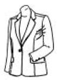
- 앞 길이가 짧고 소매둘레 전체의 위치가 높다.
- 소매 둘레가 부족하다.
- 앞 길이가 길다.
- 앞 허리 둘레 치수가 부족하다.
(정답률: 알수없음)
42. 다음과 같은 소매 패턴으로 만든 소매는?
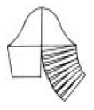
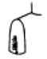
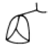
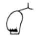
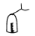
(정답률: 알수없음)
43. 다음 중 플랫칼라와 구성 원리적인 면에서 볼 때 같은 종류에 속하는 것은?
- 스텐드 칼라
- 세일러 칼라
- 셔츠 칼라
- 리본 칼라
(정답률: 알수없음)
44. 프린세스라인으로 변형시키는 과정을 옳게 설명한 것은?
- 어깨 다아트와 옆 다아트의 연결이다.
- 좌우 옆 다아트의 연결이다.
- 옆 다아트와 목 다아트의 연결이다.
- 어깨 다아트와 허리 다아트의 연결이다.
(정답률: 알수없음)
45. 더블폭(150cm)으로 긴소매 슈트 한벌을 만들 때 필요 치수는?
- 재킷길이+스커트길이+소매길이+시접(20-30㎝)
- (재킷길이×2)+스커트길이+소매길이+시접 (25-30㎝)
- (재킷길이×2)+(스커트길이×2)+소매길이+시접 (25-30㎝)
- (재킷길이+시접)×2+스커트길이+시접(25-30㎝)
(정답률: 알수없음)
46. 스커트 안감에 허리 다트는 어떻게 정리하는가?
- 중앙으로 꺽는다.
- 바깥으로 꺾는다.
- 가운데로 편다.
- 잘라서 가름솔로 한다.
(정답률: 알수없음)
47. 파이핑(piping)이란?
- 가는 주름을 잡아 겉으로 박는 것이다.
- 주름을 잡아 스티치로 고정시켜 주름으로 장식하는 것이다.
- 바이어스 테이프로 잘라 요우크선, 칼라 등의 솔기에 테이프를 넣어 박는 것이다.
- 겉감과 안감 사이에 얇은 솜을 넣고 무늬를 만들어 가며 누비는 것이다.
(정답률: 알수없음)
48. 그림은 어떤 칼라의 패턴인가?
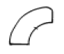
- 셔츠 칼라
- 프릴 칼라
- 플랫 칼라
- 리본 칼라
(정답률: 알수없음)
49. 셔츠 칼라에서 치수가 같아야 하는 선은?
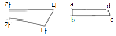
- a, b = 가, 라
- b, c = 가, 나
- a, d = 라, 다
- a, d = 가, 나
(정답률: 알수없음)
50. 작은 주름을 일정한 간격으로 박아서 장식하는 것을 무엇 이라고 하는가?
- 게이징(Gauging)
- 스모킹(Smocking)
- 턱킹(Tucking)
- 프린징(Fringing)
(정답률: 알수없음)
51. 진열대에서 몸에 꼭 끼는 티셔츠와 풍성한 주름치마를 함께 진열하는 것은 어떤 대비를 응용한 것인가?
- 재질의 대비
- 장식의 대비
- 면적의 대비
- 리듬의 대비
(정답률: 알수없음)
52. 색채에 따라 느껴지는 감각이 다른데 색상과 명도에 의해 영향을 가장 많이 받는 것은?
- 거리감
- 운동감
- 중량감
- 면적감
(정답률: 알수없음)
53. 고대 비잔틴 복장의 달마티카(Dalmatics)에서 볼 수 있었던 소매형태로 A.H.L이 풍성하여 진동둘레가 넓고, 소매밑에 주름이 많이 잡히는 형태는?
- 래글런 슬리이브(Raglan Sleeve)
- 돌먼 슬리이브(Dolman Sleeve)
- 기모노 슬리이브(Kimono Sleeve)
- 요우크 슬리이브(Yoke Sleeve)
(정답률: 알수없음)
54. 아동복 길 원형을 제도할 때 그림의 기본선의 품은 얼마로 하는 것이 적당한가?
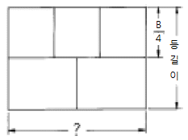
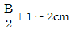
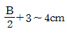
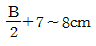
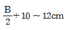
(정답률: 알수없음)
55. 스커트를 마름질할 때 지퍼 다는 곳의 기본 시접량은?
- 1∼2cm
- 3∼4cm
- 5∼6cm
- 7∼8cm
(정답률: 알수없음)
56. 다음 그림은 제도에서 무엇을 나타내는가?
- 늘임의 표시
- 줄임의 표시
- 다아트의 표시
- 심감의 표시
(정답률: 알수없음)
57. 다음중에서 시접 분량을 가장 적은 치수로 재단하는 부분은?
- 목 둘레선
- 어깨 솔기선
- 밑단
- 옆솔기선
(정답률: 알수없음)
58. 아래 그림의 굵은 선과 같은 패턴으로 제도하였을 때 완성된 칼라의 형태는?
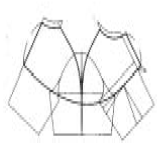
- 리플드 칼라(Rippled collar)
- 컨버터블 칼라(Convertible collar)
- 숄 칼라(Shawl collar)
- 케이프 칼라(Cape collar)
(정답률: 알수없음)
59. 다음은 선의 착시에 관한 것이다. 이 중 잘못된 설명은?
- 몸의 중심에서 바깥쪽으로 가는 사선은 사선이 모이는 곳의 폭을 좁아 보이게 하고, 간격이 넓은 곳의 폭은 넓어 보이게 한다.
- 유사한 간격의 여러 가로선으로 분할된 면은 길이가 짧아 보인다.
- 가로선에 의하여 분할된 면은 분할되지 않은 면에 비하여 넓어 보인다.
- 세로선 사이의 간격이 넓게 분할된 면은 보다 넓어 보인다.
(정답률: 알수없음)
60. 비대칭 균형의 디자인에서 느낄 수 있는 것과 거리가 가장 먼 것은?
- 성숙미, 세련미
- 안정감, 친근감
- 운동성, 유연성
- 우아함, 부드러움
(정답률: 알수없음)
4과목: 봉제과학
61. FS법에 따른 stitching class EFa는?
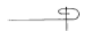
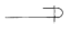
(정답률: 알수없음)
62. 다음은 재봉기의 재봉침 끝을 볼(ball)의 크기에 따른 기호를 나타낸 것이다. 이들 기호중에서 볼의 크기가 가장 작은 것은?
- Y
- J
- B
- U
(정답률: 알수없음)
63. 직선, 곡선, 각선 등을 가장 자유자재로 박을 수 있는 대표적인 재봉틀은?
- 지그재그 재봉틀
- 오버록크 재봉틀
- 인터록트 재봉틀
- 본봉 재봉틀
(정답률: 알수없음)
64. 더블릭(therblig) 기호 중에서 다음 그림은 무엇을 뜻하는가?
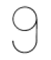
- 위치
- 사용
- 준비
- 분해
(정답률: 알수없음)
65. 어느 봉제공장에서 제품 1매의 정미총가공시간 3,000초 편성인원 50명, 여유율 20% 이고, 실가동시간이 하루 8시간일 때 SPT(표준 pitch time)는 얼마인가?
- 72초
- 62초
- 60초
- 52초
(정답률: 알수없음)
66. 두매 이상의 원단을 포개놓고 가장자리로 부터 일정거리를 유지하면서 한줄 또는 그 이상으로 봉제하는 것은?
- LS
- SS
- BS
- FS
(정답률: 알수없음)
67. 레이아웃의 원칙이 아닌 것은?
- 본류와 지류는 구별된다.
- 진행사황을 쉽게 알 수 있게 되어야 한다.
- 유연성이 있어야 한다.
- 사람이나 원,부자재 및 생산정보의 움직임은 가급적 최대로 움직이도록 되어야 한다.
(정답률: 알수없음)
68. 봉제공정에서 외경법으로 표준시간을 산출하는 계산식은 어느 것인가?
- 표준시간=실작업시간(1+여유율)
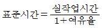
- 표준시간=정미가공시간+여유율
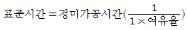
(정답률: 알수없음)
69. 검단기에 의한 검사가 필요한 직물은?
- 주름자국이 발생 안 하는 직물
- 주름자국이 발생 안 하며 값이 싼 직물
- 주름자국이 나기 쉽거나 값이 싼 직물
- 주름자국이 나기 쉬운 직물 또는 고급직물
(정답률: 알수없음)
70. 셔브릭(therbligs)분석과 가장 관계 있는 것은?
- 시간연구
- 동작연구
- 작업연구
- 가동연구
(정답률: 알수없음)
71. 단평형(短平形), 직선봉(直線縫) 본봉재봉기를 나타내고 있는 기호는?
- LS1
- DF4
- EF4
- DT6
(정답률: 알수없음)
72. 봉제 원자재들 중에서 싱글니트(single knit) 편성물에 해당하는 조직은?
- 허니콤편(honey comb stitch)
- 평편(Plain stitch)
- 밀라노리브편(milano rib stitch)
- 에잇록편(eightlock stitch)
(정답률: 알수없음)
73. 봉재된 봉합포의 특성을 평가함에 있어서 시임효율(seam efficiency)이란 어떤 평가를 뜻하는가?
- 재봉실 작업시간과 총작업 시간과의 관계를 평가한 것이다.
- 봉재원단의 강도와 봉제후의 원단 강도간의 관계를 평가한 것이다.
- 봉재원단의 강도와 봉사의 강도간의 관계를 평가한 것이다.
- 봉재원단의 강도와 땀 자체의 강도간의 관계를 평가 한 것이다.
(정답률: 알수없음)
74. 본봉 재봉기의 종류 중 윗실과 밑실에 적당한 장력을 주어 박음질을 시키는 역할을 하는 기구는?
- 보내기 기구
- 실채기 기구
- 노루발 올림 기구
- 실조절 기구
(정답률: 알수없음)
75. 전체측정회수 = 100회, 가동회수 = 80회, 여유회수 = 20회일 때 순간 관측법에서 여유율은 몇 % 인가?
- 25%
- 30%
- 30%
- 40%
(정답률: 알수없음)
76. 다음은 시임퍼커링(seam puckering)의 발생원인들에 대하여 나타낸 것이다. 비교적 관계가 적은 것은?
- 구조적인 퍼커링(inherent pucker)
- 장력차에 의한 퍼커링(tension pucker)
- 급포상태에 따른 퍼커링(feeding pucker)
- 실채기에 의한 퍼커링(take up pucker)
(정답률: 알수없음)
77. 공정편성을 실시하는 것과 가장 상관이 적은 것은?
- 공정분석표의 작성
- 시간 연구
- 색상 대비
- 가동 분석
(정답률: 알수없음)
78. 봉제품의 생산성 평가에 있어 부하공수란 어떤 뜻을 내포하고 있는가?
- 생산인원수×표준시간
- 생산인원수×작업시간
- 능력공수-부하공수
- 계획생산량×표준시간
(정답률: 알수없음)
79. 다음의 공정 분석기호가 가르키는 것은?
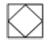
- 품질과 수량의 검사
- 수량의 검사
- 품질 검사
- 중간 검사
(정답률: 알수없음)
80. 안감으로서의 품질요구도가 가장 중요시 되지 않은 것은?
- 신축성
- 통기성
- 내광성
- 색채
(정답률: 알수없음)
5과목: 섬유제품시험법 및 품질관리
81. 직물의 실미끄럼 저항도 시험을 위하여 시험편 제작에 필요한 표준 봉목(縫目)제작 조건 중 맞지 않는 것은?
- 봉제기 - 본봉
- 바늘 - 싱거(Singer)
- 봉사 - 면 50'S/3
- 땀수 - 5땀×0.5/2.54㎝
(정답률: 알수없음)
82. 제품에 부착해 있는 취급주의 라벨에 다음과 같은 그림이 있었다. 맞는 것은?
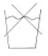
- 끓는 물에서 세탁은 하지 못함
- 물의 양을 과량으로 하여 세탁하지 말 것
- 찬물에서 세탁은 피할 것
- 물 세탁은 되지 않음
(정답률: 알수없음)
83. 계면활성제의 성질은 친수기와 친유기의 바란스 즉 HLB(hydrophile-liphophil balance)에 영향을 받는다. 친수성이 가장 큰 HLB의 값은?
- 0
- 10
- 15
- 20
(정답률: 알수없음)
84. 양모섬유의 품질을 평가하는 요소이다. 가장 상관이 없는 것은?
- 크림프와 색상
- 섬유의 섬세도
- 강도
- 굵기
(정답률: 알수없음)
85. 현미경으로 섬유를 관찰할 때 대물렌즈의 배율이 100, 대안렌즈의 배율이 10 이면, 이 때 관찰된 섬유는 몇 배로 확대되어 보이겠는가?
- 10
- 100
- 1,000
- 110
(정답률: 알수없음)
86. 다음 번수로 표시된 실 중 가장 굵은 실은? (단, 영국식 면사번수 32 Ne, 공통식 모사번수 50 Nm, 데니어식 필라멘트 번수 200 Denier, 공통식 번수 25 Tex이다.)
- 32 Ne
- 50 Nm
- 200 Denier
- 25 Tex
(정답률: 알수없음)
87. 불량율을 나타내는 분포는?
- 이항분포
- 포아송분포
- t 분포
- F 분포
(정답률: 알수없음)
88. 다음은 계면활성제의 성질에 대한 설명이다. 틀린 것은?
- 계면활성제가 물, 기타 용매에 용해되면 그 표면 또는 계면장력은 급격히 떨어진다.
- 계면활성제의 수용액은 대체로 거품이 잘 생긴다.
- 계면활성제의 유화성은 계면활성제의 농도와 관계없이 일어난다.
- 계면활성제로 인해서 기름이 완전히 물에 분산되어 있는 현상을 가용화라고 한다.
(정답률: 알수없음)
89. 혼용율이 100%라고 표시하는 경우 모섬유 이외의 대부분의 섬유에 대해서는 그 허용범위가 얼마인가?
- -1%
- -2%
- -3%
- -4%
(정답률: 알수없음)
90. 다음 그림은 어느 섬유의 단면을 나타내고 있는가?
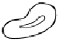
- 면
- 양모
- 아세테이트
- 나일론
(정답률: 알수없음)
91. 다음은 각종 시험분석 기기들과 그에 대한 분석내용을 조합한 것이다. 잘못된 것은?
- X-선 회절기 - 배향성
- 적외선 분광 광도기 - 섬유 중합
- 페이드 오메타(Fade-O-meter) - 퇴색성
- 스텔로미터 - 직물 마모성
(정답률: 알수없음)
92. 필링 시험방법이 아닌 것은?
- 글래브법
- 브러시 스폰지법
- 왕복테이블법
- 팽창막법
(정답률: 알수없음)
93. 양모와 토끼모를 감별하기에 가장 적합한 시험방법은?
- 염색시험
- 현미경시험
- 용해도시험
- 정색시험
(정답률: 알수없음)
94. 무게가 100g인 폴리에스테르 필라멘트사의 길이가 10km일때 이 폴리에스테르 필라멘트사의 굵기는?
- 10 tex
- 1 tex
- 0.1 tex
- 0.01 tex
(정답률: 알수없음)
95. 폴리에스테르와 면이 혼용된 섬유의 혼용율 시험에서 면을 용해하여 혼용율을 구하고자 할 때 사용하는 용해시약은?
- 5% 수산화 나트륨 용액
- 70% 황산용액
- 아세톤
- 20% 염산용액
(정답률: 알수없음)
96. AATCC에 의한 Launder-Ometer를 사용해서 측정하는 것은?
- 마찰강도
- pilling 발생도
- 세탁견뢰도
- 수축율
(정답률: 알수없음)
97. 안감의 요구성능 중 품질 요구도가 비교적 낮은 것은?
- 색채
- 흡습성
- 통기성
- 신축성
(정답률: 알수없음)
98. 의류의 봉제과정에서 발생되는 파카링(봉제주름)의 주요 원인은?
- 미싱의 운전 속도가 느릴 때
- 미싱의 북실과 바늘실의 장력이 맞지 않을 때
- 미싱기름을 과다하게 주유하였을 때
- 원단이 너무 얇을 때
(정답률: 알수없음)
99. 다음 중 끓는 0.25%의 탄산소다 용액에서 용해되는 섬유는?
- 견섬유
- 면섬유
- 아마섬유
- 알긴산섬유
(정답률: 알수없음)
100. 직물상의 녹말 존재유무를 확인해 볼 수 있는 용액은?
- 밀론 시약
- saltzman 시약
- 요드 수용액
- 프레온-TF
(정답률: 알수없음)